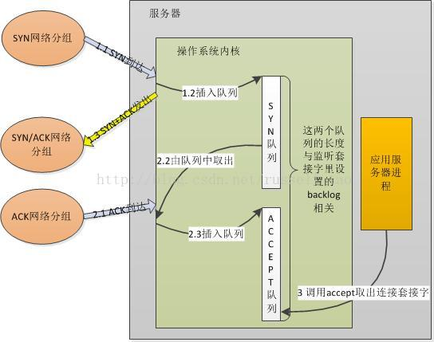
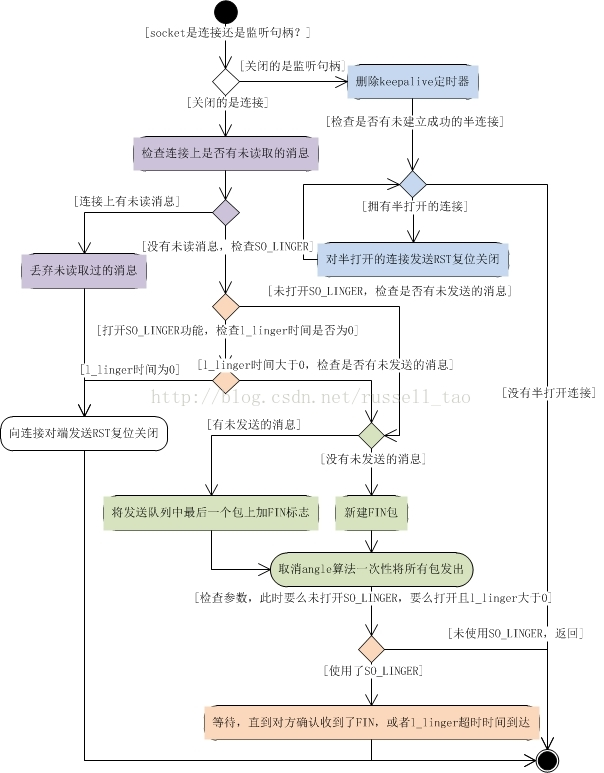

本小节主要介绍一些socket api
accept
- accept接收的示意图： 
连接接收
- 两个队列满了后，新的请求到达了又将发生什么？:若SYN队列满，则会直接丢弃请求，即新的SYN网络分组会被丢弃；如果ACCEPT队列满，则不会导致放弃连接，也不会把连接从SYN列队中移出，这会加剧SYN队列的增长。所以，对应用服务器来说，如果ACCEPT队列中有已经建立好的TCP连接，却没有及时的把它取出来，这样，一旦导致两个队列满了后，就会使客户端不能再建立新连接，引发严重问题。
close & shutdown
- 调用close时，只有当套接字的引用计数为0时，才会正真的关闭该套接字。而shutdown和引用计数没有什么关系。另外shutdown还可以实现半关闭。
- close的主要流程： 
close的主要流程
- 从上图可以看出：
- 当关闭的是监听套接字时:用于listen的监听句柄也是使用close关闭，关闭这样的句柄含义当然很不同，它本身并不对应着某个TCP连接。但是，附着在他之上的却可能有半成品连接。什么意思呢？TCP是双工的，它的打开需要三次握手，三次握手也就是3个步骤，其含义为：客户端打开接收、发送的功能；服务器端认可并也打开接收、发送的功能；客户端认可。当第1、2步骤完成、第3步步骤未完成时，就会在服务器上有许多半连接，close这个操作主要是清理这些连接。参照上图，close首先会移除keepalive定时器。keepalive功能常用于服务器上，防止僵死、异常退出的客户端占用服务器连接资源。移除此定时器后，若ESTABLISH状态的TCP连接在tcp_keepalive_time时间（如服务器上常配置为2小时）内没有通讯，服务器就会主动关闭连接。接下来，关闭每一个半连接。如何关闭半连接？这时当然不能发FIN包，即正常的四次握手关闭连接，而是会发送RST复位标志去关闭请求。处理完所有半打开的连接close的任务就基本完成了。
- 关闭普通ESTABLISH状态的连接(未设置SO_LINGER):首先检查是否有接收到却未处理的消息。如果close调用时存在收到远端的，没有处理的消息，这时根据close这一行为的意义，是要丢弃这些消息的。但是丢弃消息后，意味着连接远端误以为发出的消息已经被本机收到处理了(因为ACK包确认过了)，但实际上是收到未处理，此时也不能使用正常的四次握手关闭，而是会向远端发送一个RST非正常复位关闭连接。所以这就要求我们程序员在关闭连接时，要确保已经收到，处理了连接上的消息。如果此时没有未处理的消息，那么进入发送FIN来关闭连接的阶段。这时，先看看是否有待发送的消息。如果有待发送的消息，那么要尽快保证消息都发出去了。所以，会在最后一个报文中加入FIN标志，同时，关闭用于减少网络中小报文的nagle算法，向连接对端发送消息。如果没有待发送的消息，则构造一个报文，仅含有FIN标志，发送出去关闭连接。
- 使用了SO_LINGER选项：首先要澄清，为何要有SO_LINGER这个功能？因为我们可能有强可靠性的需求，也就是说，必须确保发出的消息，FIN都被对方收到。例如，有些响应发出后调用close关闭连接，接下来就会关闭进程。如果close时发出的消息其实丢失在网络中，那么，进程突然退出时连接上发出的RST就可能被对方收到，而且，之前丢失的消息不会有重发来保障可靠性了。SO_LINGER用来保证对方收到了close时发出的消息，即，至少需要对方通过发送ACK且到达本机。怎么保证？close会阻塞住进程，知道确认对方收到了消息再返回。然而，网络环境有的复杂，如果对方总是不响应怎么办？所以还需要l_linger这个超时时间，控制close阻塞进程的最长时间。注意，务必慎用SO_LINGER，它会在不经意间降低你程序中代码的执行速度。所以，当这个进程设置了so_linger后，前半段依然没变化。检查是否有未读消息，若有则发RST关连接，不会触发等待。接下来检查是否有未发送的消息时与第2种情形一致，设好FIN后关闭angle算法发出。接下来，则会设置最大等待时间l_linger，然后开始将进程睡眠，直到确认对方收到后才会醒来，将控制权交还给用户进程。 这里需要注意，so_linger不是确保连接被四次握手关闭再使close返回，而只是保证我方发出的消息都已被对方收到。例如，若对方程序写的有问题，当它收到FIN进入CLOSE_WAIT状态，却一直不调用close发出FIN，此时，对方仍然会通过ACK确认，我方收到了ACK进入FIN_WAIT2状态，但没收到对方的FIN，我方的close调用却不会再阻塞，close直接返回，控制权交还用户进程。从上图可知，so_linger还有个偏门的用法，若l_linger超时时间竟被设为0，则不会触发FIN包的发送，而是直接RST复位关闭连接。我个人认为，这种玩法确没多大用处。
- 总结：调用close时，可能导致发送RST复位关闭连接，例如有未读消息、打开so_linger但l_linger却为0、关闭监听句柄时半打开的连接。更多时会导致发FIN来四次握手关闭连接，但打开so_linger可能导致close阻塞住等待着对方的ACK表明收到了消息。